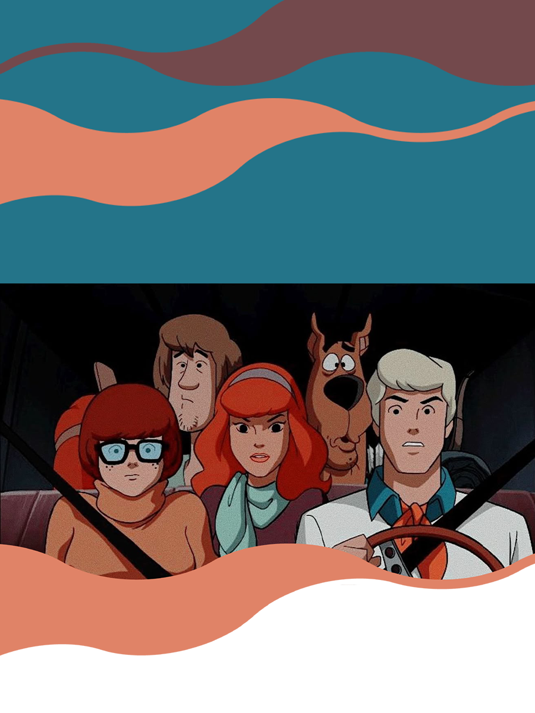

Spicy Rice is a playful display font featuring bold, rounded letters and quirky shapes that evoke a sense of fun and lightheartedness. With its irregular baseline reminiscent of hand-drawn lettering, it’s perfect for engaging headings, logos, and cheerful designs. Ideal for children’s media and vibrant branding, Spicy Rice adds a lively energy that brightens any project.
Aa Bb Cc Dd Ee Ff Gg Hh Ii Jj Kk Ll Mm Nn Oo Pp Qq Rr Ss Tt Uu Vv Ww Xx Yy Zz
1 2 3 4 5 6 7 8 9 0
! " # $ % & ' ( ) * + , - . / : ; < = > ? @ [ \ ] ^ _ ` { | } ~
Fred
Velma
Daphne
Shaggy
Scooby-Doo


Spend the night in a haunted mansion with Scooby and the gang! Enjoy a thrilling evening filled with ghost stories, a scavenger hunt for hidden clues, and a midnight screening of classic Scooby-Doo episodes. Prizes for the best costumes and a breakfast feast of Scooby snacks in the morning!
Join the gang for a spooky night at the Creepy Carnival! Explore haunted rides, solve puzzles hidden in the funhouse, and uncover the mystery of the ghostly ringmaster. Enjoy carnival snacks, play games, and help Scooby and Shaggy catch the villain!
Put on your detective hat and join teams in the Great Scooby-Doo Mystery Race! Navigate through the park, solving clues and completing challenges related to classic episodes. Encounter surprise characters along the way, and the first team to solve the mystery wins a special prize!